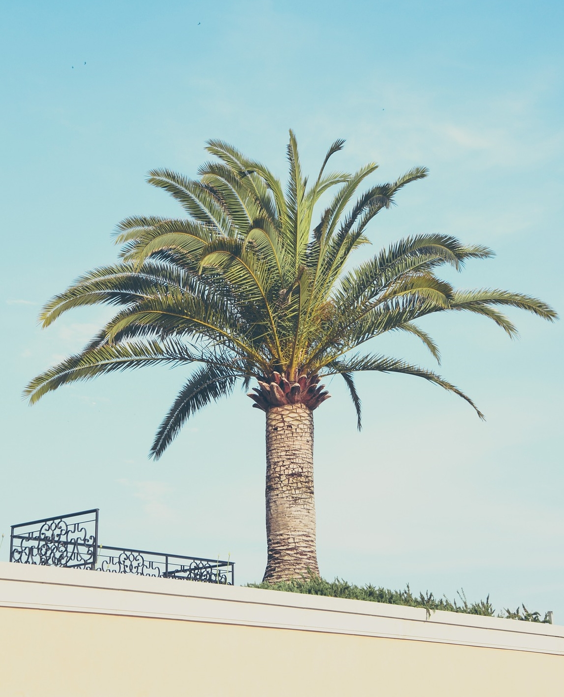

Poda de arbustos y plantas
La poda consiste en suprimir brotes y ramas y se realiza con diversos fines:
Proporcionar fuerza y vigor a las plantas y estimular el crecimiento. Mejorar su desarrollo y floración. Para orientar el crecimiento y proporcionar una distribución equilibrada de las ramas.

Poda de árboles y palmeras
Con la poda se logra restablecer el equilibrio entre el sistema radical (el conjunto de las raíces) y el mantenimiento de la forma y sanidad del árbol, ademas de beneficios como Reducir el riesgo de infecciones en los tejidos del árbol, Controlar el crecimiento del árbol y Mejorar la iluminación y favorecer el paso de aire.

Cuidado y mantenimiento de césped
El riego es esencial para la supervivencia de la planta, el corte es una de las labores esenciales de la planta y junto a la fertilización que es el tercer pilar que sostiene un césped sano,verde y brillante.
Eliminación de mala hierva
Si quieres acabar con las malas hierbas de tu jardín, nuestros jardineros son expertos en quitar todo tipo de hierbas silvestres para mantener el jardín en buen estado.
Limpieza
También hacemos limpiezas de obras, garajes, jardines y domicilios.
Si tienes cualquier duda, tienes CONSTULTA GRATUITA
Y MUCHO MÁS
No dudes en consultarnos si necesitas hacer una Mudanza, Diseño u Obras.
Estamos aqui para ayudarle a construir un mundo mejor a base de pequeños cambios que marcan grandes dicefencias!
Precios accesibles a todas las clases.
A su disponibilidad por todas las zonas de Orihuela Costa, Torrevieja y alrededores.
Contáctanos sin ningun compromiso!
CONSULTA GRATUITA